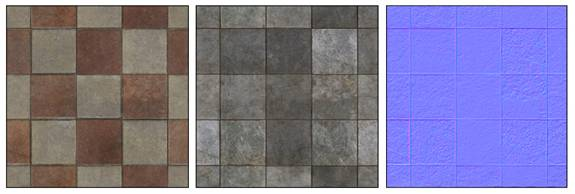
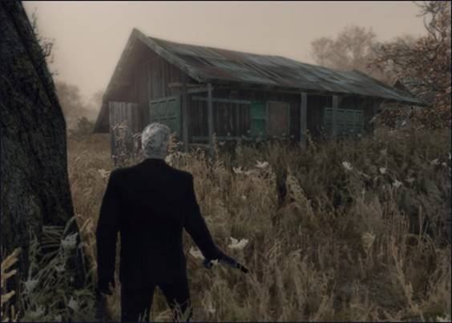
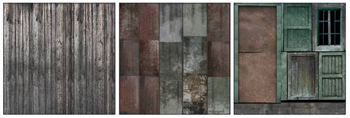
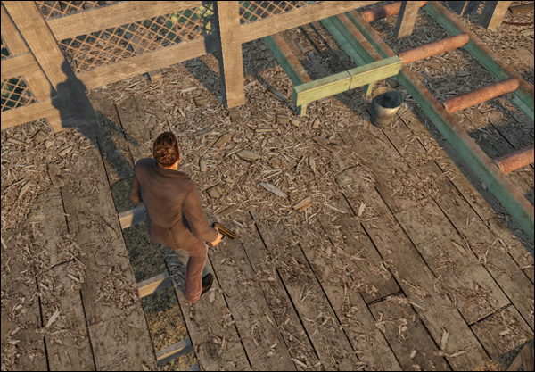
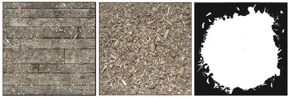
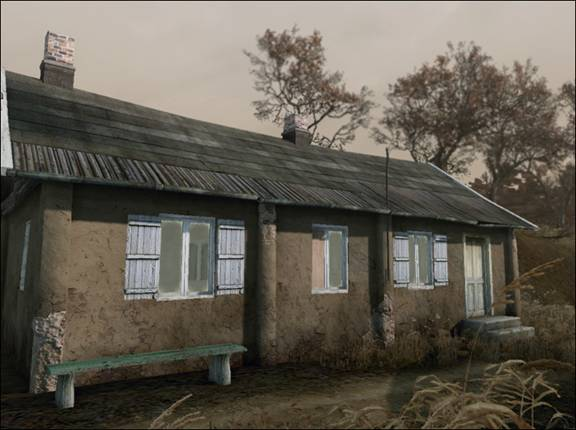
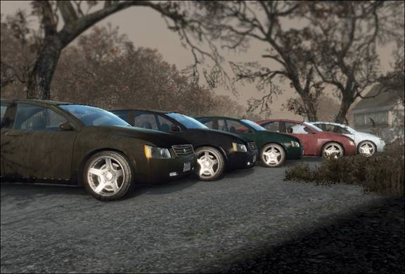

Overview
Textures in CRYENGINE are usually created with Adobe Photoshop and stored in the TIF image format using the Export Textures with CryTIF - Photoshop. However, the TIF images are not used directly in the game but converted to a more optimized format (usually dds) by the Resource Compiler.
Not all textures can use the same settings, normal maps for example require a different compression than diffuse maps. For that reason the Resource Compiler does the conversion based on presets that can be selected by the user when saving the TIF file.
General Guidelines
- All textures must be in .tif format and saved with the CryTIF plugin; the Resource Compiler will automatically generate the final dds textures.
- When using the CryTIF plugin, meta data is stored into the file which the Resource Compiler uses to generate .dds images correctly for the engine to use.
- The engine does not support bump to normal map conversion at load time as this can be done more efficiently in the pre-processing stage together with compression.
- All textures must be power of 2 (e.g. 128*128, 1024*1024, 512*2048, etc).
- For road textures, make sure your texture is horizontal.
- Alpha is typically done in the Alpha channel of the Diffuse texture.
Specifying Texture Conversion Presets
In the CryTIF plugin for Photoshop, artists can specify the appropriate conversion preset for the TIF texture. The RC will automatically apply certain assumptions depending on the source .tif contents, filename, and preset settings.
When no special presets for the .tif file are specified, the RC will do the following:
- .tif file that have alpha channel (if the alpha channel is not completely white) it will generate DXT3 compressed .dds file.
- .tif file without alpha channel will generate DXT1 compressed .dds file.
If the conversion preset for the .tif file is specified, the RC will try to match the target format to the specified preset.
Texture Creation Tips
Reusing Normal Maps and Specular Maps
Reusing normal maps and specular maps when possible will save a lot of texture memory. Especially normal maps, as they are twice as expensive memory wise compared to regular textures.
Example: If an area will use several types of floor tiles, brick walls, concrete walls, etc., creating the textures so they can use the same normal map and spec map will be a great benefit.
Only using spec maps and normal maps when really needed will also save a lot on performance and memory.

Two different floor textures using the same normal map.
Combining Textures
Smaller generic architecture parts like pipes, railings, etc., can also be combined into one texture to save on drawcall materials and texture space.

A simple house can consist of a wall texture, roof texture and a detail sheet with all the additional parts as windows, frames, door etc. This will save on materials and drawcalls.

Example of textures used for the above building: wall, roof, and a detail sheet with all the parts.
Improving Texture Quality
To compensate for a lack of texture memory and texture amount, the following tricks help to improve texture quality. Use decals to break up and compensate for lack of texture amount.
Using dirt and stain decals is an easy way to break up tiling patterns:

The following picture is a saw mill floor with a tiling wood floor texture. Sawdust decals in the Alpha map were placed in corners and around to break up the pattern.

Below is an example of the use of decals for walls. Broken concrete parts on pillars are decals that were placed on farm stucco buildings.

Use vertex colors to create variety, depth and color variations. Vertex painting and pre-baked vertex lighting is a relatively cheap way of adding depth to models and to make them look more interesting. Adding shadows or color variations on models using smaller tillable textures.
Using grayscale textures that can be color tinted saves on texture memory. Instead of using five slightly different colored stucco wall textures, one neutral or grayscale texture can be used to save on texture memory. The above farmhouse was originally a white stucco texture that was used elsewhere in the level and tweaked to a mud brown color.
More objects that could benefit from this technique are, for example: Car paint, fences, barrels, crates, smaller props like bottles, coffee cups, etc.
The cars in the screenshot below all share the same grayscale texture.

Use detail maps to add more details and crispness to lower res textures. Detail maps are smaller textures used to add details on low res textures. They add details on closer range and create the illusion that the texture is more high-res that it actually is.
Examples could be to add extra grain to wood, extra bump and cracks to a concrete wall or smaller stains and scratches to car paint.